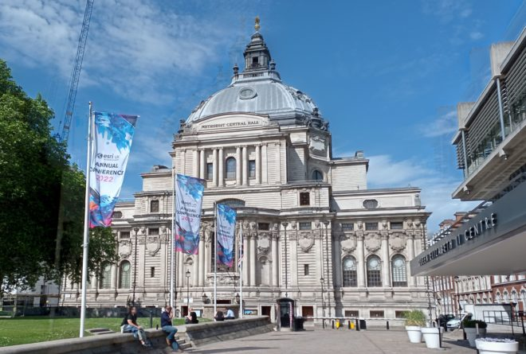

ESRI UK & GeoBusiness: Digital Twins or just Digial Offspring?
Last week I attended the first ESRI UK Annual Conference (17th May) and the first GEO Business conference (18th & 19th May) for three years (although GEO Business had a conference last autumn, which I didn’t manage to attend). It was great to be back at the Queen Elizabeth II Centre for the ESRI UK Annual Conference – it is always a great opportunity to meet colleagues working in GIS in the UK across all industries. Clearly open source didn’t feature that much (!) but all of the ESRI tools were showcased and it was a great opportunity to see what is coming up over the next year.

ESRI UK Annual Conference at QEII Centre, Westminster, London Sustainability was the key theme of the conference, “GIS – Creating a Sustainable Future”, with the Met Office delivering the keynote focusing on climate change. I actually missed their presentation (a long train journey!) but hearing from other participants it sounded a good presentation, although there was the question of how we turn talk about climate change at the conference into action that makes a real difference in the world.
ESRI were very keen to push the ArcGIS Suite as a set of capabilities and focusing on what you can do with their tools, rather than the tools themselves. Highlights include new graph data structures now available in ArcGIS Pro, the versatility of LiDAR data and ArcGIS Image for ArcGIS Online, ESRI’s response to Google Earth Engine allowing processing of large satellite data in the cloud. On that note, ArcGIS Online was first launched ten years ago – which was a slight shock to many attendees! It has gone from strength to strength – and I do like how the ArcGIS products have made GIS more accessible to new users.
ArcGIS Hub also featured prominaty as a way of collating information and making it avaialbe to non-GIS users. We also heard about deep learning models being features in the Living Atlas, real time vechicle tracking (although interestingly no mention of ethics), and greater links with AutoDesk billed as ArcGIS GeoBIM. ESRI are also very keen on pushing greater use of the cloud – either provided through ESRI’s owns services, or, longer term, hosting the various ArcGIS products on the cloud yourself. We saw a great semo of ArcGIS Geoanalytics running a Python Notebook on databricks.
Finally, we had various mentions of ‘digital twins’. I remember the last GEO Business conference I went to in 2019 there was a lot of talk about digital twins, but nobody had actually created and used one. Now, a number of people have. One example was a model of buildings in London including information on how much water might be needed by the fire brigade to extinguish a blaze in a specific building and whether the water supply network could supply the needed amount of water. A few people weren’t convinced these were digital twins – as the key definition of a digital twin is that it includes real time updates. However, ‘real-time’ depends a bit on what temporal scale you are working to – and the amount of water needed to extinguish a blaze in a specific building probably wouldn’t change that much – so I think this is very case dependent.
GEO Business 2022 at ExCeL, London I also attended the GEO Business conference out at ExCeL on the following day. Again, this was a great networking opportunity, although with a slightly different subset of the geospatial community. I went to a couple of very interesting applications talks – including one from the Met Office by Anthony Veal, who was working on a pilot project to increase the rated capacity of overhead electricity lines depending on the weather. Currently, overhead lines are rated for their maximum capacity based on a worse case weather scenario, which is rarely reached. Heat is the main limiting factor on the lines, with wind being the primary mitigating factor. This project is working on moving from a static worst case scenario limit to dynamic limits based on the current wind conditions. It is still in relatively early stages, with one case study, but shows a potentially significant increase in capacity at certain times. This, arguably, could be considered a digital twin with its’ real time data but the Met Office didn’t use this term.
Doug Specht also gave an excellent talk on Teaching Geospatial Ethics, and how he approaches this with his audience of students who are not geographers, but are often asked to create maps. He summarised the issues as a very nice three principles:
No visualisation is neutral
Platforms have politics
All perspectives are partial
This works very well for this students – journalists, writers and communication – and works as a great first step before looking at geospatial ethics frameworks like the Locus Charter.
Cloud processing also cropped up a lot at GEO Business, with many of the companies, large and small, offering new cloud based services for working with LiDAR point clouds, aerial photos and drones. There was also a nice expansion of engaging others with GIS and highlight how useful it can be across all professions – something I strongly believe in and see every day.
Overall it was a great couple of days, with lots to think about. Please do add your comments in below, and if you are interested in finding out how GIS could benefit your work, please check out my book GIS: Research Methods, the GIS courses I offer or reach out if you would like a chat.